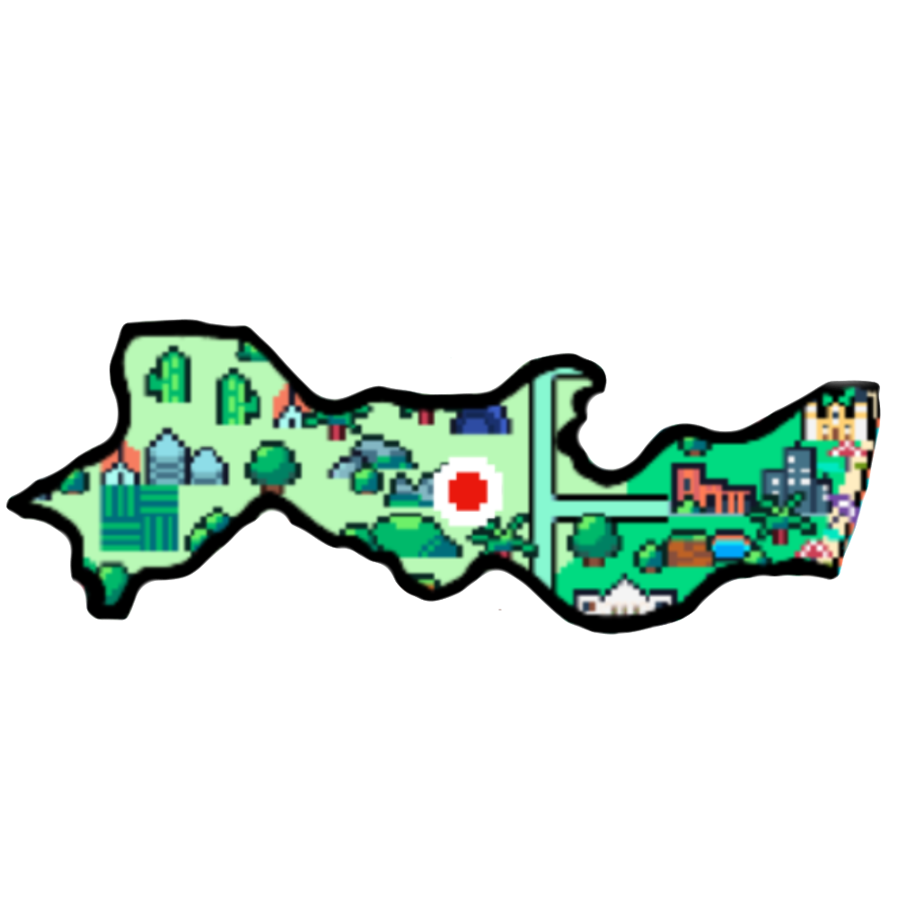

JANGADA PARA PISCINAS NATURAIS: É o mais tradicional , deve-se realizar com a maré baixa, a saída e da Vila de Porto de Galinhas, neste passeio poderá apreciar o contato com os peixes, ouriços e caranguejos. PRAIA DE CARNEIROS: Se destaca por ter águas claras e mornas, que com a barreira dos arrecifes formam verdadeiras piscinas naturais. FERNANDO DE NORONHA: Nas principais praias de Fernando de Noronha há passeios de barco pelas baías dos Golfinhos e do Sancho, observe de perto a vida marinha através de mergulhos.

HISTÓRIA 
 O território onde hoje se encontra o Estado de Pernambuco foi primeiro denominado Capitania Luzitânia. A área foi doada pela Coroa portuguesa a Duarte Coelho, em 1535. Coelho se estabeleceu em Olinda, que foi a primeira capital do estado. Em 1537, foram fundadas as ilhas de Igarassu e a própria Olinda.
PONTO TURISTICO 
CLIMA